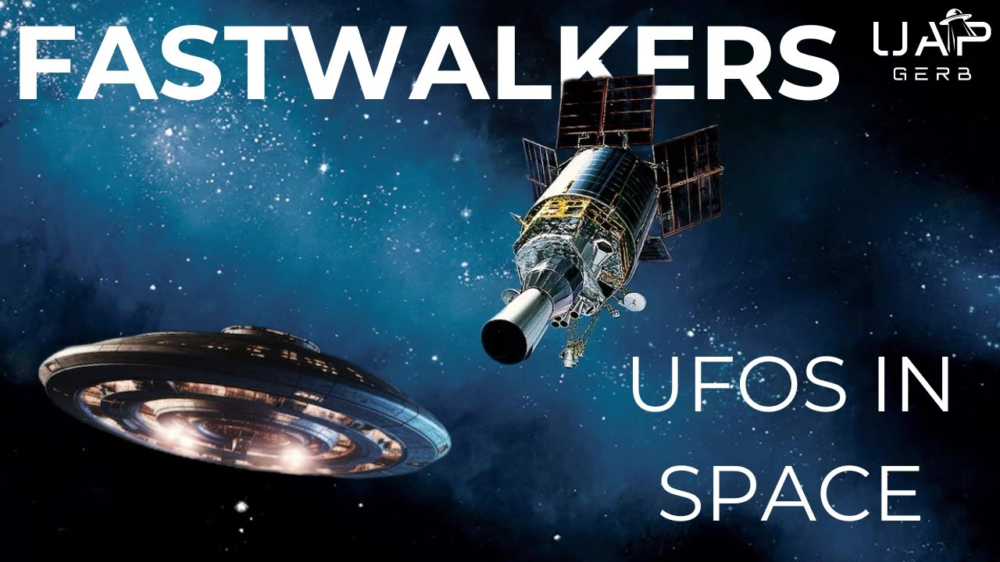

FASTWALKERS – UFOs Outside Earth

Published: 2024-02-28 · Duration: 22:16 · Channel: UAP Gerb
Description
Today let's take a look at the term known as Fastwalkers, a designation for UFOs detected entering or leaving Earth's atmosphere. The terms Fastwalker and Slowwalker have conveniently been utilized by USNORTHCOM and NORAD to avoid any sort of declassification through FOIA requests or other means by Executive Order.
In this video, we will cover 3 instances in which NORAD, Space Force, and the USG denied access to data on fastwalkers and UFOs in space. The Trail does not end here, however. NORAD's interest in UAP was outed by the infamous J. Allen Hynek in the 60s. Fastwalkers also appear within the 2016 Hillary Clinton email leaks where communications between campaign manager John Podesta and USG Contractor Bob Fish. Fish discusses the Defense Support Program's (DSP) role in monitoring UFO/UAP/Fastwalker.
Following down this rabbit hole we can stumble onto 2 shocking cases allegedly involving UAP detection from DSP - one UFO performing impossible maneuvers in space, and another offering confirmation to the 1976 Tehran UFO incident.
The Rabbit Hole of DSP and Fastwalkers goes deeper with ties to the Aerospace Corporation, one of the companies suggested by Jacques Vallee and Ross Coulthart participating in "real" UFO research.
0:00 Intro 0:59 Terminology 1:37 Greenwald FOIA Denial 3:42 1979 NORAD FOIA Denial 4:47 Orbit Determination of Sunlight Illuminated Objects Detected By Overhead Platforms 5:53 Defense Support Program 6:22 Space Based Satellite Tracking and Characterization Utilizing Non-Imaging Passive Sensors 7:59 Leaked Fastwalker Emails 10:58 1984 Fastwalker DSP Case 14:05 1976 Tehran UFO DSP Connection 19:54 The Aerospace Corporation 20:24 Conclusion
2023 Black Vault FOIA Denial: https://www.theblackvault.com/documentarchive/space-force-says-documents-on-fastwalkers-and-slowwalkers-all-exempt-from-disclosure/
FOIA Exemption 1: https://www.justice.gov/archive/oip/foia_guide09/exemption1.pdf
Black Vault 2013 Fastwalker NORAD Denial: https://documents.theblackvault.com/documents/ufos/fastwalkers/FY14-19NOV2013-07.pdf
Orbit Determination of Sunlight Illuminated Objects Detected By Overhead Platforms: https://documents.theblackvault.com/documents/ufos/fastwalkers/a209227.pdf
Space Based Satellite Tracking and Characterization Utilizing Non-Imaging Passive Sensors: https://documents.theblackvault.com/documents/ufos/fastwalkers/ADA478890.pdf
Clear intent: the government coverup of the UFO experience: https://archive.org/details/clearintentgover00fawc/mode/2up
Podesta Fish Email: https://web.archive.org/web/20200501044117/https://wikileaks.org/podesta-emails/emailid/54211
2014 DSP Fact Sheet: https://web.archive.org/web/20140720060107/http://www.losangeles.af.mil/library/factsheets/factsheet.asp?id=5323
Ross Coulthart on Fish: https://www.ufojoe.net/bob-fish/
TOP SECRET SPY SATELLITES SPOT UFOS Mentioned By Fish: https://web.archive.org/web/20180102111818/http://ufodigest.com/shadowmag/extra/topsecret.html
Space Force X DSP: https://www.spaceforce.mil/About-Us/Fact-Sheets/Article/2197774/defense-support-program-satellites/
1984 Fastwalker: https://web.archive.org/web/20040225055544/http:/www.debshome.com/FastWalker.html
NICAP 1985 Fastwalker Report: https://www.nicap.org/reports/840505orbit_report.htm
Cosmic Conspiracy: Part Five, The 80s Six Decades of Government UFO Cover-Ups: https://web.archive.org/web/20030308070428/http:/www.anomalies.net/ufo/gov/dsp/
Joe Stefula: https://www.vlm.cem.va.gov/JOSEPHJOHNSTEFULA/5EEC8
NICAP 1976 Tehran: https://www.nicap.org/760919tehran_dir.htm
DSP Connection Email: https://web.archive.org/web/20060615035006/http:/www.virtuallystrange.net/ufo/updates/1998/apr/m05-009.shtml
Tehran DSP Image: https://web.archive.org/web/19990428103840/http:/ufo-world.simplenet.com/iran_dsp.html
Tehran DSP Claims Controversy: https://web.archive.org/web/20060717010735/https:/www.cohenufo.org/dsp_claims.html
Music By the Always Talented: https://www.youtube.com/channel/UCz71_7z7NphLPZ0l_7G3Llg
ufo #uap #uapnukes #uapdisclosure #ufology #ufonews #ufosightings #uapsightings #ufofootage #uapfootage #hynek #condoncomittee #Jallenhynek #projectsign #projectgrudge #projectbluebook #bluebook #ufocongress #SOL #solfoundation #karlnell #Battelle #UFOreverseengineering #lockheed #skunkworks #lockheedmartin #rosscoulthart #fastwalker #blackvault #slowwalker
Transcript
Show transcript
What if I told you the terms we use every single day, UFO and UAP are limited and only paint part of the picture according to the US government? Would you be surprised to learn that UFO-UAP encompass only phenomena and transmedial craft operating within Earth's atmosphere and under the planet's oceans? In fact, the USG, particularly NORAD and the US Space Force, have an entirely different designation for UFOs entering or leaving Earth's atmosphere, fast walkers and slow walkers. Hey guys, it's UAPGurb, I'm back and as always thank you for returning to the channel. Today we are going to go down the deep rabbit hole of space-bound UFOs known as fast walkers. Too little the question is asked, how often are UFOs observed in outer space? Well, the USG is clearly concerned about this question and has a storied history of investigating fast walkers. So let's get some terms out of the way and again, remember there is a distinction here from UFO. The Walker call sign describes objects entering or leaving Earth's atmosphere at variable speeds. Slow walker for low velocity objects and fast walkers, well, you guys can probably guess. Today we are only going to focus on the latter, the fast walker. This distinction is crucial as during an age of increasing, albeit surface level UFO transparency, it allows the USG to avoid declassification slash Freedom of Information Act requests for fast walkers and slow walkers. In late 2023, John Greenwald of the Black Vault received a decisive and final response to his countless FOIA requests on the term fast walkers and slow walkers. This response came from the US Space Force, the famed USAF space division. With this request, Greenwald sought any reports, information, detailed military info on this topic. In response, Space Force issued a full denial to divulge any material under FOIA, citing exception one, as a denial to disclose which states quote, under criteria established by an executive order to be kept secret in the interest of national defense or foreign policy. But curiously, this wasn't actually the first time Greenwald was denied access to any information on fast walker. Ten years earlier in 2013, Greenwald submitted a similar request which was handled by USNorthcom, the United States Northern Command which oversees NORAD, the North American Aerospace Defense Command. NORAD is headquartered at Space Force Base in Colorado. I know this doesn't seem very important now, but keep NORAD in mind. Anyways, Northcom and NORAD responded to Greenwald stating fast walker documentation is quote, currently and properly classified, again by executive order 13526, quote, considered critical to national defense or foreign policy and is thus controlled by the US government. But there were two documents that were provided to Greenwald. One, a paper titled Orbit Determination of Sunlit Illuminated Objects Detected by Overhead Platforms from 1989 and Space-Based Satellite Tracking and Characterization Utilizing Non-Imaging Passive Sensors from 2008. But NORAD's refusal to share any data on fast walkers or UFO tracking data doesn't start with Greenwald. Check this out, this is an extremely interesting excerpt from the book, Clear Intent, the government cover-up of the UFO experience by authors Barry J. Greenwood and Lawrence Fawcett. This book contains both a section of the scanned NORAD UAP reporting sheet, but also a chapters on UFOs and FOIA, the Freedom of Information Act. Within this chapter is a request to NORAD for UAP tracking data to which NORAD replies will require over 18,000 man hours and a cost of $155,000 at the time in 1979, which would equate to well over half a million USD today. NORAD also refused to waive the fees on a follow-up request three years later. So let's use the documents provided to Greenwald to get a jump start on fast walkers and utilize any other clues to try and learn more about them. We can trace this fast walker designation to originate with NORAD, utilized to detect objects entering or leaving atmosphere, as I mentioned above, at significant speeds by US defense systems. The first of the two documents, the one on orbit determination of sunlit illuminated objects, was written by USAF Captain Richard P. Ossedax. And this details the joint efforts of NORAD and the Air Force Foreign Technology Division to investigate uncataloged space-bound objects detected by reflected sunlight passing through satellite sensors designated as fast walkers. This document states that the data on these objects has been recorded since 1972 by, quote, certain ballistic missile early warning satellite systems located at various geostationary locations. And also, this paper sought to determine orbit or motion of these objects, but was deemed unsolvable by former efforts by one researcher, Wong, as mentioned. Shockingly, the report states the fast walker analysis has become an increasingly important issue due to the increase in geosynchronous satellites, which detect the objects while ground-based sensors cannot. So very important here. We can assume the increase in detection and database built in 1972 is a result of the Defense Support Program. The DSP served and serves currently as the US's primary ballistic missile entry warning system and its first satellite DSP-1 went into orbit in 1970. Additionally, DSP information is relayed to NORAD, and remember, DSP is now part of the US Space Force. Our second paper on space-based satellite tracking was written by Captain Bradley R. Townsend in the Air Force Institute of Technology out of Wright-Patterson Air Force Base, and sought to revisit to determine the orbit or movement of fast walkers again, quote, satellite-based sensors looking down at the Earth's surface occasionally observe reflected light from an object passing through the image, which is moving too fast relative to the background of the image to be located within the atmosphere. These objects are commonly called fast walkers. These study comments on the 1972 Ausadax study and referred to the database origin from obtained ballistic missile entry warning satellites. Not much else to cover here, as study methods yield similar results with an inability to determine range to fast walker targets, but remember again that the ballistic missile warning satellites are mentioned here again, DSP, the Defense Support Program. Our trail with fast walkers NORAD and DSP Ballistic Warning Detection satellites doesn't stop with these two documents, however. For example, on the 6th of January 1967, Scientific Advisor to Project Blue Book Jay Allen Heineck I talked about him extensively in many videos, like my history on the UFO Stigma, discussed at Goddard Space Flight Center that NORAD tracks UFOs and has been since 1957, and that every single continental U.S. military UFO case in Blue Book files are designated as a NORAD case. And does anyone remember the Hillary Clinton campaign leaks provided by WikiLeaks? This is where a rabbit hole gets wild. Well, pouring through them you can find an incredibly interesting email chain to Clinton campaign manager John Podesta. On this email from March of 2015, there is a detailed communication between USG contractor Bob Fish and Podesta. Fish was the program manager for several highly classified U.S. government advanced communication systems projects in the 1980s and 1990s. These included the White House and several executive branch intelligence agencies. And for what it's worth, just as a side note, Bob himself was vetted by Ross Colthart. But anyways, Fish makes an immediate and direct claim that quote, one of the government programs that collects hard data on unidentified flying objects is the USAF DSP satellite program. In fact, the main body of this email is so interesting I may as well quote the whole thing. Quote, I can add a little insight to rumors published on the web. While I was never fully briefed into the DSP operation directly, I was introduced to them as the U.S. prepared for Operation Desert Shield and Desert Storm. On occasion, I had lunch with a few of them in the cafeteria of a highly classified organization in El Segundo, California. No one could get into the cafeteria without TS-SCI clearance. So this was not a lightweight group of gossipers. One of these times, a member of that group was really excited, said they just picked up a fast walker, I assume that same day. He described how it entered our atmosphere from deep space, origin actually unknown, but of course from the backside of the satellite and zipped by the DSP satellite pretty closely on its way to Earth. Not only was it going very fast, but it made a 30 degree course correction turn, which means it did not have a ballistic freefall reentry trajectory that a meteorite might have. So it was under some sort of control, although whether it was manned or just robotic, there's no way to tell. Towards the end of the email, Bob references a line in the 2014 Defense Support Program fact sheet to support the idea the DSP is still collecting fast walker data 24 years later. Quote, In addition, researchers at the Aerospace Corporation have used DSP to develop portions of a hazard support system that will aid public safety in the future. Remember this line, and remember the mention by DSP itself of the Aerospace Corporation. Fish also links to a strange, now defunct blog, which I've accessed via the web archives titled quote, Top Secret Spy Satellite Spot UFOs by Tim Schwartz. Fish strangely comments that much of the information on this site is correct. But where else can we connect DSP and fast walkers? Let's visit a case from the 5th of May 1984. An anonymous source claims to a journalist named Joe Stafula, a former Army Criminal Investigation Command, that a highly classified U.S. Defense Support Program spy satellite detected a UAP. It comes within 1.8 miles of the DSP satellite before flying below it over the Indian Ocean. It is moving 22,000 miles per hour, changes course, and allegedly flies back into outer space. Since this case is so old and there is so little published about it, tracking this down has been an absolute bear. But I have been able to find two now destroyed sites on this article. And by the way, does this case not sound very similar to the incident Fish was describing to Podesta? Anyways, both sites state, quote, this object was first spotted by the ultra sensitive orbiting U.S. DSP satellite our country uses for detailed surveillance and air defense. These satellites have the infrared capacity to spot small heat sources on the surface of the Earth and are time proven as effective monitoring devices, end quote. Which this lines up with the 1970 Duke paper, where the DSP satellites monitor small light or heat reflections off of fast walkers. This ancient blog, Deb's UFO research, provides an interesting depiction of the event through three images. Image one shows the DSP one satellite. Image two shows the fast walker headed left to right towards Earth. And image three depicts the reversal of the fast walker as it retreats back to open space. This site also provides an image of the trajectory of the fast walker by Stifula himself and states, quote, an object was spotted by a U.S. DSP satellite and tracked as it sped first directly toward the Earth and passed in front and within 15 miles of the U.S. DSP satellite. It suddenly and without impact or contact with other devices or obstructions curved outward away from the Earth. It was tracked for another nine minutes until it disappeared, end quote. Additionally, the site publishes a recreation or possibly an image of the top secret incident report summary. See the incident underlined. I am still unclear on terminology here such as the UCF listing and the ST in the field of view. If you can identify these terms to help decipher this image, please let me know and maybe we can work together on a follow up to this case. Stifula states, quote, have been able to confirm that the DSP printout for that date shows an event at the same time with the same characteristics, end quote. We cannot use this evidence to prove or deny this case's story and records as true or false concretely until we can do a full analysis on an entire DSP report. This case remains speculative. Our next case with ties to the DSP and fast walkers will actually be familiar to fans of my channel yet will likely shock you, the 1976 Tehran UFO encounter. For those of you who have not seen my first grounded flight due to UFOs video, I recommend checking that out. So here's a clip on one of my all time favorite UFO encounters. The link to fast walker was done by researchers Lee Graham and Roger Rager, satellite sensor technicians at Aerojet in California. They themselves confirmed that the UFO sighting over Tehran was in fact tracked by the United States military DSP satellite. During their investigations, Graham and Rager located a computer printout from the timeframe of the Iranian UFO overflight, which shows that the DSP satellite definitely detected a quote anomalous object in Iranian airspace. After a long and fruitless venture to confirm these claims finding nothing besides a declassified paper often referenced by Rager titled, Now You See It, Now You Don't, by Yousaf Captain Harry S. Shields, I was finally able to begin to pull on the strings of the evidence Graham and Rager proposed. Within the NYCAP report of the 1976 Tehran incident, there exists a link to a long dead email chain between Brad Sparks, an early founder of CAUS, the Citizens Against UFO Secrecy, and blog owner RJ Kohen. Here Brad raises concerns about DSP-1 detecting the UFO in the 76 case and questioned whether the satellite actually captured the Mirage F-4s scrambled to pursue the UFOs instead. Spark references a quote, out of focus graphic image, end quote, that only gives the date not time of the event and states quote, 238 scans possible SR. Since DSP scans once every 10 seconds, this means that DSP scanned an object for 39.7 minutes and the SR term listed may refer to strategic reconnaissance. After going deeper, I was able to find an email chain from the now also defunct VirtuallyStrange.net dating back to 1998, which references the DSP connection in the 1976 Tehran case. This email states quote, JPEG is available at the above URL, end quote, so at this point I was finally getting close to finding the actual image. Following the source of the JPEG takes us to a 1997 blog post on ufoworld.simplenet.com, titled quote, the DSP connection. And here we get the out of focus grainy image that supposedly depicts the DSP printouts highlighting the 1976 Tehran fast walker by Graham Enreger. Guys, the only things we can determine from this raw image is a similar to structure to the 1984 fast walker case where the term UCF is referenced multiple times as well and the aforementioned 238 scans possible SR. The rest of the image is illegible and frustrating. Due to my limited graphic experience, I have tried and failed to AI upscale this image to make the rest of the text legible. Also my backwards image search yielded zero results. If you think you can help me make this document legible, please please please email me at uapgirb.com and let's figure this case out together. So there we have it, two cases connecting fast walkers and DSP, but both lead us to somewhat dead ends with insufficient data to further our investigation. I am going to keep getting to the bottom of this hopefully with one of you, but let's get some relevant updates to these cases soon. So remember back how Fish mentioned, at the end of the 2014 DSP fact sheet, quote, in addition, researchers at the Aerospace Corporation have used DSP to develop portions of a hazard support system that will aid public safety in the future. Well guys, the Aerospace Corporation is suspected as one of the legacy private corporations who engage in, quote, real UAP research. In ufologist Jacques Fillet's book Hidden Science 5, which accounts for Valet's journals from 2000s to 2009, he along with Kit Green, physicist Hal Puthoff, astrophysicist Eric Davis and Kristen B. Zimmerman, suspect that Aerospace Corporation alongside Lockheed Raytheon and Northrop Grumman are among the USG contractors involved with deep UFO work. And in Ross Colthart's fantastic book In Plain Sight, I would highly recommend reading that book. He writes that a source told him about an aerospace company in Long Beach, California with access to, quote, the wreckage. The source told Ross, quote, the program was controlled by a relatively small group of people, not all in government, including people in aerospace, intelligence, and corporate financial communities. The source said that the company had sprawling gardens. And the only major aerospace company in Long Beach, California that has this type of campus is the Aerospace Corporation. And remember Colthart is no slouch, he is the man after all who broke the grush story. And there is much more work to be done investigating the Aerospace Corporation that is not the subject of this video. But it is interesting to see how Space Force and DSP would be analyzing DSP data with the Aerospace Corporation, a company with possible larger ties to covert UAP study to, quote, develop portions of a hazard support system that will aid public safety in the future. Hey guys, thank you so much for joining me today. I know it just feels like we started to scratch the surface of fast walkers and space bound UAP, but I wanted to make this video for a brief look into kind of how Space Force, USG, DOD, NORAD kind of use the terminology of fast walker to skirt around FOIA and how this isn't a new term. And we can trace back to the 76 Iran case, the 1984 DSP-1 case to, you know, possibly lead some evidence to early fast walker detection. Those two cases are of extreme interest to me. And if you think you can help me out decipher that terminology, find out where those images were actually sourced from or AI upscale them to help me figure out what the heck they are saying. Please again, contact me at uapgurb at gmail.com. And I hope you found that Lee M. Graham pretty interesting. I've actually tried to connect with him on Facebook and so that is pending. I'd like to hear more about his research into this case. And there's actually a lot of interesting things surrounding Graham and some claims he made. I've heard some people liken him to a similar person to a 1980s UFO whistleblower. So should be some exciting stuff on that if I can actually get in contact with him. Guys, please remember if you enjoy the video to like or subscribe and leave a comment what you think about DSP, fast walkers, space bound UAP and so forth. Thank you guys so much for joining and as always, I will catch you for the next video.
Entities
People (37)
- Aerospace Corporation
- Barry J. Greenwood
- Blue Book
- Bob Fish
- Brad Sparks
- Bradley R. Townsend
- Clear Intent
- Desert Storm
- El Segundo
- Eric Davis
- Graham Enreger
- Hal Puthoff
- Harry S. Shields
- Hillary Clinton
- Jacques Fillet's
- Joe Stafula
- John Greenwald
- John Podesta
- Kit Green
- Kristen B. Zimmerman
- Lawrence Fawcett
- Lee Graham
- Lee M. Graham
- Long Beach
- Northrop Grumman
- Operation Desert Shield
- Plain Sight
- Richard P. Ossedax
- Roger Rager
- Ross Colthart
- Ross Colthart's
- Scientific Advisor
- Space Force
- Space Force Base
- Tim Schwartz
- U.S. DSP
- US Space Force
Places (1)
- Space-Based Satellite Tracking and
Organizations (7)
- Army Criminal Investigation Command
- Lockheed
- USAF
- Yousaf
- the Aerospace Corporation
- the Air Force Foreign Technology Division
- the Air Force Institute of Technology